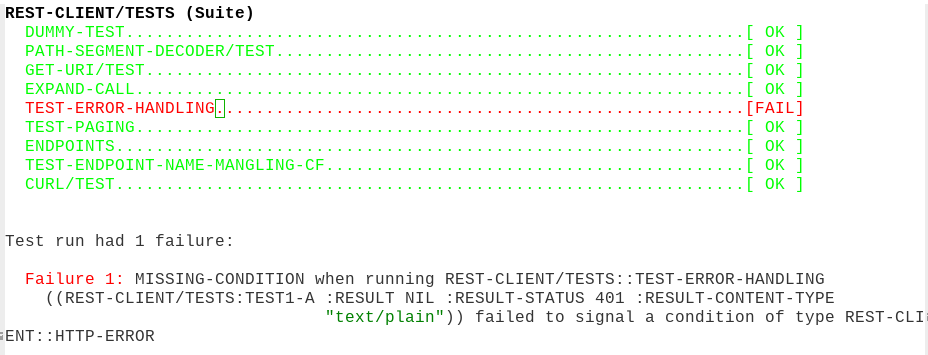

Integration of test framework to Emacs
Summary
Description of the customizations of the Common Lisp test framework to streamline interaction with tests in emacs.
The particular framework is combination of Fiasco and sly (and emacs and asdf), but this can be probably generalized to slime and other test frameworks.
I am not sure whether this is available out-of-box for other test frameworks, the framework summaries I checked in past did not cover that.
Workflow
The current workflow:
- A key combination when in a Lisp file runs tests relevant to the appropriate asdf package
- They are displayed in a separate buffer with a special mode - that is, font-locked and with keybindings such as:
- g to rerun the test suite
- p and n to move to previous/next failure
- . or M-. is used to jump to the (failing) test definition
- From it, jump to tested function works out-of-box in sly (again, M-.), but there is also another shortcut to jump from the function to it tests (or to a place where they should be)

Figure 1: Buffer with test results
Code under test conventions
The framework requires some level of cooperation from tested code:
- The tests are run using asdf:test-op. It means that the code under testing needs to define that.
- The tests need to be run with Fiasco for font locking to work. This should be easy to specialize for other test frameworks. Some additional care to get test packages may be also needed (I take package name from the Suite header in Fiasco)
The implementation of code-to-test feature is enabled by these assumptions:
- Tests for file foo.lisp are in file tests/foo.lisp
- Tests for function foo are named foo/<something>
Possible improvements
- I should probably show the generated test results in real time, not as a big chunk when done
- Code cleanup - function names, etc (this is demo quality)
- Maybe compilation mode would be better starting point.
- Factor out strings specific for Fiasco
Implementation
Entry point is this function (with keybinding in lisp-mode).
(defun tz-asdf-test-system (&optional system prefix) "Compile and test an ASDF SYSTEM." (interactive (list (sly-asdf-find-current-system) prefix-arg)) (switch-to-buffer (concat "*" system "*")) (let ((buffer-read-only nil)) (delete-region (point-min) (point-max)) (insert (sly-eval `(cl:with-output-to-string (cl:*standard-output*) (asdf:oos 'asdf:test-op ,system :force nil :verbose ,prefix))))) (fiasco-test-results-mode) (setq-local tested-system system) (goto-char (point-min)) (fiasco-next-failure))
(defun fiasco-get-package () "Get package for symbol under point from the suite" (re-search-backward "^\\(.*\\) (Suite)") (match-string 1))
The special mode just highlights suites, successes and errors.
(define-derived-mode fiasco-test-results-mode special-mode "fiasco" "Mode to highlight Fiasco results." (setq font-lock-defaults `((("^[A-Z].* (Suite)" . 'bold) ("^ [A-Z].*\\.\\{1,\\}\\[ OK \\]" . 'success) ("^ [A-Z].*\\.\\{1,\\}\\[FAIL\\]" . 'error) ("^ Failure [0-9]+:" . 'error)) nil nil ((?\; . "<") (?\n . ">")))))
(defun fiasco-test-edit () (interactive) (let ((sly-buffer-package (save-excursion (fiasco-get-package)))) (sly-edit-definition (sly-symbol-at-point t))))
Rerun the tests. Maybe this should take parameters to fit revert-buffer convention.
(defun fiasco-rerun () (interactive) (tz-asdf-test-system tested-system))
Jump to previous and next failure. I am sure there is some code that can be reused to make it cleaner.
(defun fiasco-next-failure () (interactive) (let ((point (point))) (next-line) (if (or (search-forward "[FAIL]" nil t) (search-forward " Failure " nil t)) (beginning-of-line-text nil) (goto-char point)))) (defun fiasco-prev-failure () (interactive) (let ((point (point))) (previous-line) (if (or (search-backward "[FAIL]" nil t) (search-backward " Failure " nil t)) (beginning-of-line-text nil) (goto-char point))))
And finally bind the relevant commands for the new mode.
(bind-keys :map fiasco-test-results-mode-map ("." . fiasco-test-edit) ("M-." . fiasco-test-edit) ("n" . fiasco-next-failure) ("p" . fiasco-prev-failure) ("g" . fiasco-rerun))